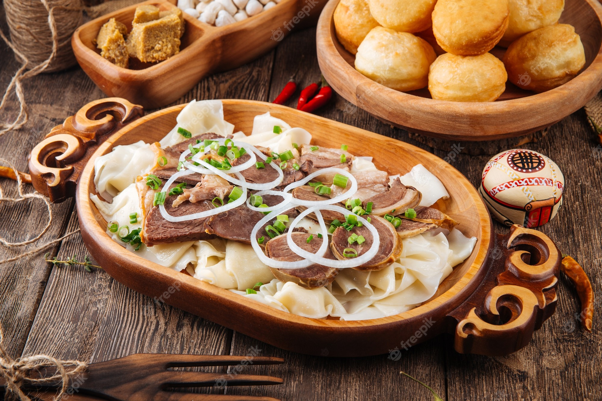

Beshbarmak

Description
Beshbarmak is a traditional Kazakh dish made of boiled meat, usually beef or lamb, served with flat noodles and onions. The dish is often accompanied by broth and is a popular choice for festive occasions and family gatherings.
Ingredients
- 1 kg beef or lamb
- 500g pasta (or flat noodles)
- 1 onion
- Salt and pepper to taste
- Water for boiling
- Vegetable oil (for frying onions)
Steps
- Boil the meat in a large pot until tender (about 2-3 hours).
- Prepare the flat noodles according to the recipe or package instructions.
- Fry the chopped onions in oil until golden brown.
- Once the meat is cooked, slice it into small pieces.
- Serve the noodles with the meat and fried onions on top.
- Optionally, serve with some of the broth for extra flavor.